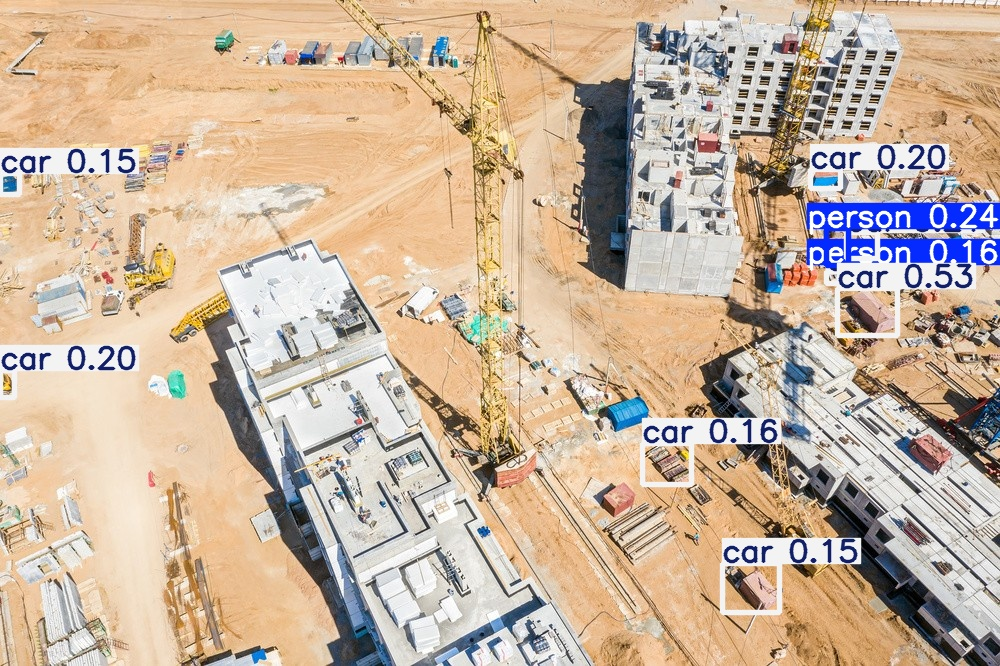
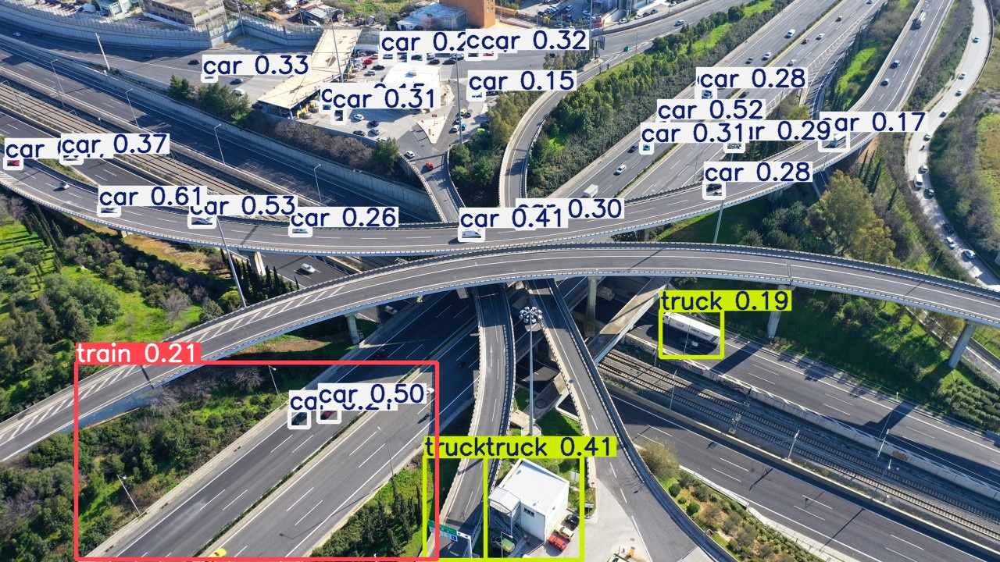

这份报告由一套六天写成的 Python 流程自动生成：输入航拍图片，输出带检测框的结果图、目标数量统计表， 以及一份可读的文字报告。下面全部是三张示例图的真实运行结果，不是示意图。
| 图片 | 识别结果 | 说明 |
|---|---|---|
construction.jpg | car 8 · person 2 | 工地场景，人与车辆同时被检出 |
river.jpg | 未识别出目标 | 俯视水面，无通用类别目标（或低于阈值） |
road.jpg | car 25 · truck 3 · train 1 | 道路场景，车辆密集，检出数量最多 |
以下三张是模型实际输出的结果图，检测框和类别标签都来自模型本身。


| 环节 | 做法 |
|---|---|
| 检测模型 | Ultralytics YOLO（yolo11n / yolo11s），COCO 预训练权重 |
| 推理参数 | conf = 0.15，imgsz = 1280（提高分辨率以检出小目标） |
| 流程编排 | 识别 → 逐类计数 → 写 CSV → 生成 Markdown / TXT 报告 |
| 运行环境 | Python 3.11，CPU 可跑，单张图约 150 ms |
| 代码组织 | 六个脚本分别对应“验证环境 / 测试航拍 / 统计 / 出报告 / 一键流程 / 视频检测” |
下一步计划：提高 conf 后做人工抽样评估 · 图像切片检测（SAHI 思路）· 收集巡检数据做专用微调 · 报告接入图表可视化。
这份报告不是手写的，跑一遍代码就能得到同样结果：
pip install -r requirements.txt
python day05_full_pipeline.py输出物：runs/detect/ 下的结果图、detection_summary.csv 统计表、
inspection_report.md 报告。换成自己的图片放进 test_images/ 重跑即可。